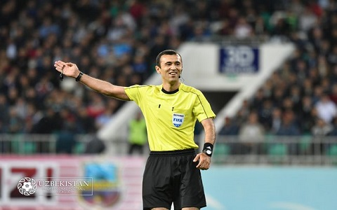
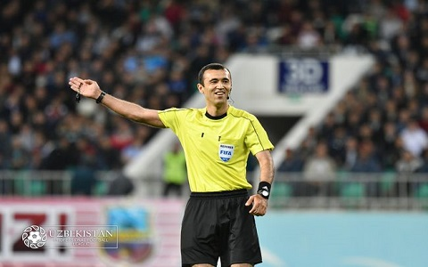

FOOTBAL
Futbol (inglizcha: football; foot — „oyoq“, ball — „toʻp“) — sport oʻyini. Oʻyindan maqsad-toʻpni raqib darvozasiga kiritish. Bunga har bir jamoadagi darvozabon xalaqit berishga intiladi, unga oʻz darvozasi yaqinidagi jarima maydonchasi ichida toʻpga qoʻl bilan teginish ruxsat etilgan. Boshqa barcha oʻyinchilarga, shuningdek oʻz jarima maydonchasidan tashqariga chiqqan darvozabonga ham bunday huquq berilmagan.
Toʻp uchun kurashda chalib yiqitish, raqibga zarba berish kabi kuch ishlatishlar taʼqiqlanadi. Agar oʻyinchi toʻpga qoʻlidan tashqari tanasining istalgan boshqa yeri (odatda oyogʻi) bilan istalgan vaqtda zarba bera oladigan holatda boʻlsa, oʻyinchi toʻpni egalladi, deb hisoblanadi .
Odatda futbol toʻgri toʻrtburchak shaklidagi maydonda oʻynaladi. Har bir jamoa 11 futbolchidan (10 ta oʻyinchi va bitta darvozabon) tashkil etiladi. Alohida bir futbol oʻyini match, deb atalib, har biri 45 daqiqa davom etuvchi taymlardan iborat boʻladi. Birinchi va ikkinchi taymlar orasida jamoalar oʻrin almashishadi.
Bundan tashqari shunday futbol turlari borki, ulardagi oʻyinchilar soni kamroq boʻlishi mumkin — jumladan plyaj futboli (qumda oʻynaladi), mini-futbol (maxsus qoplamali zalda oʻynaladi), mahalla futboli (har qanday maydonda har qancha oʻyinchilar bilan oʻynaladi).

FOOTBAL QOIDALARI:
b
Oʻyin qoidalari Xalqaro futbol assotsiatsiyasi kengashi (IFAB) tomonidan ishlab chiqiladi va tasdiqlanadi,[4]IFABning tarkibiga FIFA (4 ovoz), shuningdek, Angliya, Shotlandiya, Shimoliy Irlandiya va Uels futbol assosiasiyalari vakillari kiradi. Rasmiy oʻyin qoidalarining eng soʻnggi ishlab chiqilgan nashri 2013-yil 1-iyun sanasi boʻlib, 17 ta qoidadan iborat
1-QOIDA O'YIN MAYDON


Uzunligi: kamida 90 m (100 yd), koʻpi bilan 120 m (130 yd)
Kengligi: kamida 45 m (50 yd), koʻpi bilan 100 m (90 yd)
Maydoni — 4050 m2 dan 10 800 m2 gacha.
Xalqaro oʻyinlar uchun maydon oʻlchamlari
Uzunligi: kamida 100 m (110 yd), koʻpi bilan 110 m (120 yd)
Kengligi: kamida 64 m (70 yd), k’pi bilan 73,2 m (80 yd)
FIFA tomonidan tavsiya etilgan oʻlchamlar[2]:
Uzunligi: 105 metr
Kengligi: 68 metr
Maydoni: 7140 m2
2-QOIDA FUTBOL TOPI

 Futbol toʻpi futbolda oʻynaluvchi sharsimon toʻpdir. Futbol qoidalariga koʻra toʻpning aylanasi 68-70 sm, massasi 410—450 g, ichki havo bosimi 55-80 kPa, usti charm yoki shunga oʻxshash material bilan qoplangan boʻlishi zarur.[1]
Futbol toʻplarini bir qolipga keltirish 1863-yilda, toʻplarning qanday boʻlishi haqidagi qoidalar joriy etilishi bilan boshlandi. 1872-yili bu qoidalarga oʻzgartirishlar kiritildi.
Hozirgi toʻplar 32 yoqli sharsimon ikosaedr shaklidadir, ulardan 12 tasi muntazam beshburchak, 20 tasi muntazam oltiburchakdir.
Ikosaedr va futbol toʻpi
Futbol toʻplari avvalboshda bir rangli: jigarrang, oq boʻlgan. 1960-larda oq-qora televideniyedagi futbol matchlari efirlari uchun toʻplar oq-qora rangga boʻyala boshlandi. Rangli televideniye yoyilishi bilan bu odat keraksiz boʻlib qolib, endilikda toʻplar har xil ranglarga boʻyalmoqda.
Futbol toʻpi futbolda oʻynaluvchi sharsimon toʻpdir. Futbol qoidalariga koʻra toʻpning aylanasi 68-70 sm, massasi 410—450 g, ichki havo bosimi 55-80 kPa, usti charm yoki shunga oʻxshash material bilan qoplangan boʻlishi zarur.[1]
Futbol toʻplarini bir qolipga keltirish 1863-yilda, toʻplarning qanday boʻlishi haqidagi qoidalar joriy etilishi bilan boshlandi. 1872-yili bu qoidalarga oʻzgartirishlar kiritildi.
Hozirgi toʻplar 32 yoqli sharsimon ikosaedr shaklidadir, ulardan 12 tasi muntazam beshburchak, 20 tasi muntazam oltiburchakdir.
Ikosaedr va futbol toʻpi
Futbol toʻplari avvalboshda bir rangli: jigarrang, oq boʻlgan. 1960-larda oq-qora televideniyedagi futbol matchlari efirlari uchun toʻplar oq-qora rangga boʻyala boshlandi. Rangli televideniye yoyilishi bilan bu odat keraksiz boʻlib qolib, endilikda toʻplar har xil ranglarga boʻyalmoqda.
3-QOIDA FUTBOL FORMA
FORMA
QALQONCHALAR
BUTSALAR
Futbolchi formasining asosiy elementi futbolka hisoblanadi. Orqa tomonda, yaʼni har bir oʻyinchi formasining bel qismida ushbu
oʻyinchining jamoadagi raqami tushiriladi — bu oʻyin davomida maydonda oʻyinchini tezda aniqlashga xizmat qiladi. Dastlab, jamoa oʻyinchilariga ular egallagan pozitsiyaga mos ravishda 1 dan 11 gacha raqamlar berilgan. Hozirda professional darajadagi
oʻyinchilar 1 dan 99 gacha istalgan raqamni tanlaydilar.
XX asrning 80-yillarida dastlab Evropada, keyin esa SSSRda futbolkalarda raqam ustidagi yana bir yozuv paydo boʻldi: tegishli
oʻyinchilarning familiyalari yoki taxalluslari. Bunday yozuvlar futbolkaning orqa tomonida, raqamning tepasida joylashgan (bu anʼana, 1 dan 99 gacha boʻlgan raqamlar kabi, birinchi marta xokkeyda paydo boʻlgan va shundan keyingina futbolga koʻchib
oʻtgan). Hozirgi vaqtda futbolchilarning raqamlari, futbolkadan tashqari, shortiklarning yon old tomoniga ham joylashtirilishi mumkin. Shuningdek, XX asrning oʻrtalaridan futbol klublari homiylarining logotiplari formaga joylashtirila
boshlandi.
4-QOIDA HAKAM
 

Hakam — bu maxsus mahorat va vakolatlarga ega boʻlgan futbol oʻyini ishtirokchisi.
Hakamning huquq va majburiyatlari Futbol oʻyini qonunlarining 5-qoidasida belgilangan. Har bir oʻyin uchun hakamlar
(hakamlar) brigadasi tayinlanadi, ular quyidagilardan iborat:
(bosh) hakam;
ikkita yordamchi hakam ;
(musobaqa qoidalariga qarab) darvoza chizigʻi orqasida toʻrtinchi hakam, ikkinchi yordamchi va ikkita qoʻshimcha hakam
yordamchisi.
baʼzi turnirlarda: VAR tizimi doirasidagi video hakamlar (monitorda ishora qiladi), ularning soni va vakolatlari oʻziga
xos futbol musobaqasiga qarab oʻzgaradi.
5-QOIDA O'YINDAN TASHQARI HOLAT


«Agarda hujum qilayotgan futbolchining gol urish mumkin bo‘lgan tana a’zolaridan hech bo‘lmaganda bittasi
ham
himoyachi bilan bir chiziqda joylashgan bo‘lsa — ofsayd hisoblanmaydi, hatto hujumchining boshqa tana
a’zolari oldinda
bo‘lganda ham. Shu bilan bilan masala hal bo‘ladi, millimetrlar haqida tortishuvlarga chek qo
‘yiladi», — dedi Arsen Venger.
tuzuvchi:KARIMOV MUHAMMADAMIN